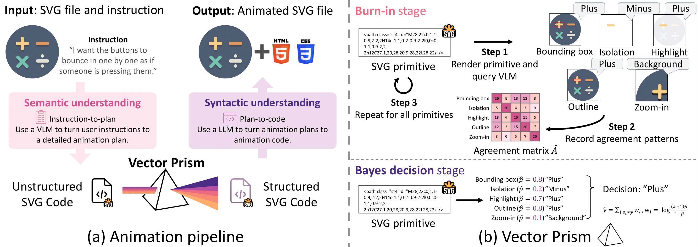
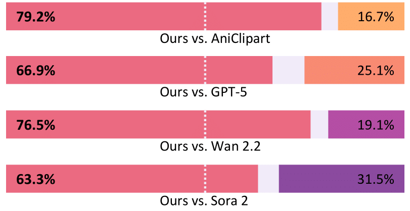

Vector Prism
Animating Vector Graphics by Stratifying Semantic Structure
Jooyeol Yun
blizzard072@kaist.ac.kr
Jaegul Choo
jchoo@kaist.ac.kr
Why Animate Vector Graphics?
"The coin spins into the piggy bank."
💡 Hover to see infinite scalability
Vector graphics (SVGs) power the modern web. They are infinitely scalable with perfect clarity at any resolution, 54× smaller than video files, editable with CSS and code, and portable across any device. Yet animating them meaningfully is incredibly difficult, even for LLMs. This is because SVGs are made of thousands of low-level elements (paths, groups, shapes) that lack semantic structure. Naively animating these elements leads to chaotic, incoherent results.
Vector Prism re-organizing vector graphics to have a semantically meaningful structure before animating them, enabling high-quality, user-controllable animations that were previously impossible.
How Do We Do It?
When you say "make the buttons bounce," there is no "buttons" in the code, but just scattered <path> elements with no semantic structure.
We need to identify which elements correspond to "buttons" first.

We render each SVG element multiple ways (highlighted, isolated, zoomed), collect (possibly incorrect) predictions from a vision-language model, then use Dawid-Skene model to aggregate these noisy predictions into reliable semantic labels. This turns weak, contradictory signals into robust semantic decisions.
Results at a glance
vs. Sora 2's 69.1
vs. video formats

Vector Prism achieves state-of-the-art performance across both instruction-following metrics and file efficiency, demonstrating that proper semantic structure unlocks superior animation quality.